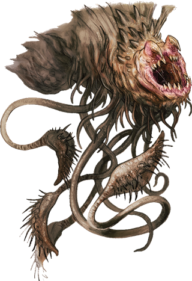

Balhannoth
Native to the Shadowfell, the vicious, predatory balhannoth alters reality in its lair to make the place appear inviting to travelers. A limited form of telepathy enables a balhannoth to identify images of places where its prey expects their needs and desires to be met, such as an inn or a temple offering healing. It then warps reality around itself, hiding itself and remaking its environment to resemble such a place. The imitation is imperfect, but it's good enough to fool greedy or desperate creatures. Once its prey enters the trap, it snatches the targets and teleports away to feed on their fear and despair.

Dungeon builders and Underdark tyrants sometimes venture into the Shadowfell to capture balhannoths for use as guardians.
Balhannoth
Large Aberration, Typically Chaotic Evil
- Armor Class 17 (natural armor)
- Hit Points 114 (12d10 + 48)
- Speed 25 ft., climb 25 ft.
STR DEX CON INT WIS CHA 17 (+3) 8 (-1) 18 (+4) 6 (-2) 15 (+2) 8 (-1)
- Proficiency Bonus +4
- Saving Throws Con +8
- Damage Vulnerabilities
- Damage Resistances
- Damage Immunities
- Condition Immunities blinded
- Skills Perception +6
- Senses blindsight 500 ft. (blind beyond this radius),passive Perception 16
- Languages understands Deep Speech,telepathy 1 mile
- Challenge 11
Legendary Resistance (2/Day). If the balhannoth fails a saving throw, it can choose to succeed instead.
Actions
Multiattack. The balhannoth makes one Bite attack and two Tentacle attacks.
Bite. Melee Weapon Attack: +7 to hit, reach 5 ft., one target. Hit: 19 (3d10 + 3) piercing damage.
Tentacle. Melee Weapon Attack: +7 to hit, reach 10 ft., one target. Hit: 10 (2d6 + 3) bludgeoning damage, and the target is grappled (escape DC 15) and is moved up to 5 feet toward the balhannoth. Until this grapple ends, the target is restrained, and the balhannoth can't use this tentacle against other targets. The balhannoth has four tentacles.
Legendary Actions
The balhannoth can take 3 legendary actions, choosing from the options below. Only one legendary action can be used at a time and only at the end of another creature's turn. The balhannoth regains spent legendary actions at the start of its turn.
Bite. The balhannoth makes one Bite attack against one creature it has grappled.
Teleport. The balhannoth teleports, along with any equipment it is wearing or carrying and any creatures it has grappled, up to 60 feet to an unoccupied space it can see.
Vanish. The balhannoth magically becomes invisible for up to 10 minutes or until immediately after it makes an attack roll.
A Balhannoth's Lair
In the Shadowfell, balhannoths make their lairs near places inhabited by creatures they hunt. They typically haunt well-traveled roads and paths, snatching people who come along. A balhannoth used as a guardian in the Underdark might lair in caves near Underdark passages and guard the ways in and out of its keepers' enclave.
Lair Actions
On initiative count 20 (losing initiative ties), a balhannoth can take one of the following lair actions; the balhannoth can't take the same lair action two rounds in a row: * Teleport. The balhannoth targets one creature within 500 feet of it. The target must succeed on a DC 16 Wisdom saving throw, or the target, along with whatever it is wearing and carrying, teleports to an unoccupied space of the balhannoth's choice within 60 feet of it. * Vanish. The balhannoth targets one creature within 500 feet of it. The target must succeed on a DC 16 Wisdom saving throw, or the balhannoth becomes invisible to that creature for 1 minute. This effect ends if the balhannoth attacks the target. * Warp Terrain. The balhannoth warps reality around it in an area up to 500 feet square. After 10 minutes, the terrain in the area reshapes to assume the appearance of a location sought by one Humanoid whose desires the balhannoth has sensed (see Regional Effects below). The transformation affects nonliving material only and can't create anything with moving parts or magical properties. Any object created in this area is, upon close inspection, revealed as a fake. Books are filled with empty pages, golden items are obvious counterfeits, and so on. The transformation lasts until the balhannoth dies or takes this lair action again.
Regional Effects
A region containing a balhannoth's lair becomes warped by the creature's unnatural presence, which creates one or more of the following effects: * Sense Desires. The balhannoth can sense the strongest desires of any Humanoid within 1 mile of it and learns whether those desires involve a place: a safe location to rest, such as a temple, a home, or somewhere else. * Supernatural Lure. Creatures within 1 mile of the balhannoth's lair experience the sensation of being close to whatever they desire most. The sensation grows stronger the closer the creatures come to the balhannoth's lair. * If the balhannoth dies, these effects end immediately.